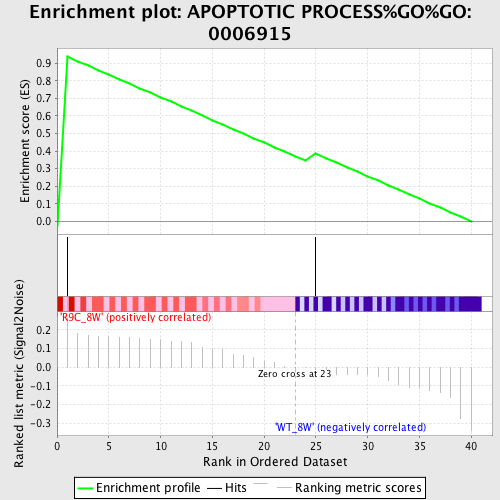
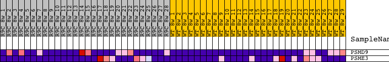
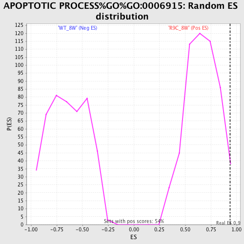

| | | Dataset | Expressiontestfile.8w_r9c_vs_wt_SN.cls#R9C_8W_versus_WT_8W |
| Phenotype | 8w_r9c_vs_wt_SN.cls#R9C_8W_versus_WT_8W |
| Upregulated in class | R9C_8W |
| GeneSet | APOPTOTIC PROCESS%GO%GO:0006915 |
| Enrichment Score (ES) | 0.93566453 |
| Normalized Enrichment Score (NES) | 1.404455 |
| Nominal p-value | 0.022222223 |
| FDR q-value | 0.13220647 |
| FWER p-Value | 0.215 |
Table: GSEA Results Summary

Fig 1: Enrichment plot: APOPTOTIC PROCESS%GO%GO:0006915
Profile of the Running ES Score & Positions of GeneSet Members on the Rank Ordered List
| PROBE | DESCRIPTION
(from dataset) | GENE SYMBOL | GENE_TITLE | RANK IN GENE LIST | RANK METRIC SCORE | RUNNING ES | CORE ENRICHMENT | | 1 | PSMD9 | PSMD9_MOUSE | | | 1 | 0.261 | 0.9357 | Yes |
| 2 | PSME3 | PSME3_MOUSE | | | 25 | -0.010 | 0.3846 | No |
Table: GSEA details [plain text format]

Fig 2: APOPTOTIC PROCESS%GO%GO:0006915
Blue-Pink O' Gram in the Space of the Analyzed GeneSet

Fig 3: APOPTOTIC PROCESS%GO%GO:0006915: Random ES distribution
Gene set null distribution of ES for APOPTOTIC PROCESS%GO%GO:0006915